BrainSpeak Podcasts · Apple 27 · Konzeptreferenz
Wissen vor dem Hören.
Originalentwurf mit zehn iPhone-Screens. Keine laufende App, keine offiziellen Apple-Screens und keine verifizierten Podcast-Aussagen. Die plattformspezifischen Vorgaben für iPad, Mac und Watch stehen in den Markdown-Unterlagen.
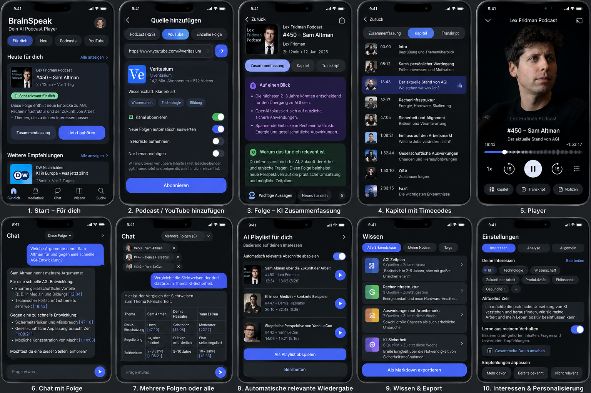
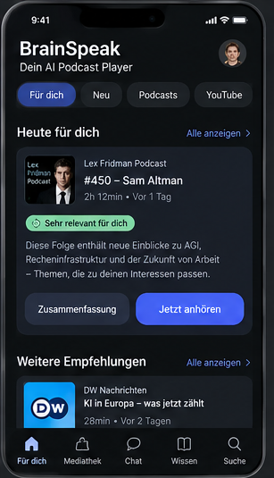
01 fuer dich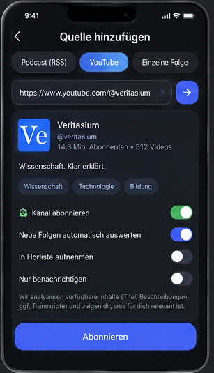
02 quelle hinzufuegen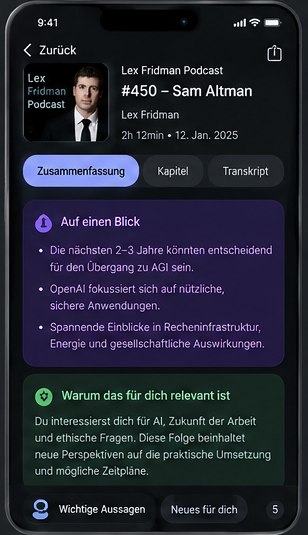
03 verstehen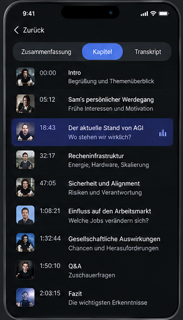
04 kapitel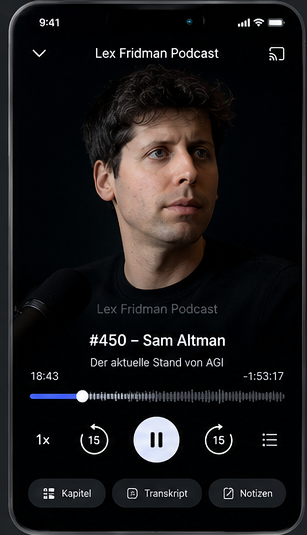
05 player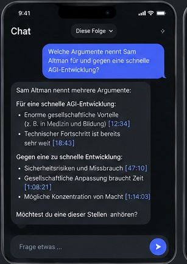
06 chat folge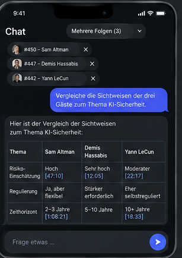
07 chat auswahl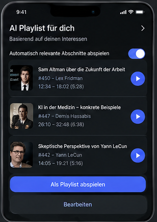
08 fokus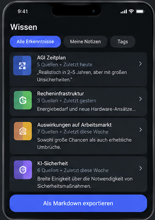
09 wissen export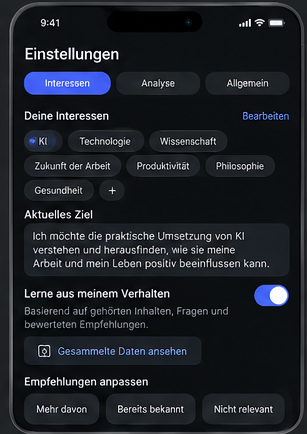
10 interessenDie Zeitcode-Wiedergabe wird in der aktuellen Spezifikation durch Medienfassungsprüfung, Kontext, Budget und Startfreigabe abgesichert.